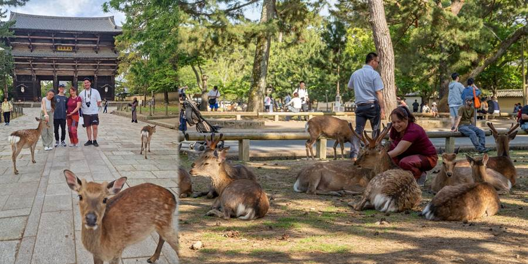

Dan deveti: jeleni u Nari
Došla sam po njih da idemo u Naru. U Nari je bilo sveta, ali nije prevelika gužva.
Tamo jeleni slobodno šetaju parkom. Oni su domaćini. Prilaze, klanjaju se. Ima puno govanaca od jelena u parku. Treba paziti gde se gazi. Deca mi se smeju jer sam im rekla da paze gde staju, a za sekund stala u deset brabonjaka. Nekoliko jelena zajedno sa nama je prelazilo pešački prelaz.
Bili smo u jednoj bašti, parkiću. Lepo je sređena priroda. Putići u kamenu. Vodica. Besplatno je, ali zatvaraju u 17h. Poslednji ulazak je u 16:30. Mi smo stigli u 16:32. Čika nas odveo do vrata i pustio iako smo kasnili. To mi tako netipično za njih.
Otišli smo do hrama Todai-ji. Tamo smo kupili keksiće za jelene. Kad su oni krenuli da napadaju. Klanjaju pa nestrpljivi pa me gricnu. A njih nekoliko došlo. Daš jednom keksić, drugi te gricne. Inače su potpuno miroljubivi kad nema keksića. Deca nisu htela da ih hrane jer grickaju.
Došli smo na mochi show, velikim čekićem lupaju gnjecavo testo, stigli smo pre pola sedam, a rade do sedam. Ali oni sve već prodali i ne prave više. Čiste i zatvaraju. Ko bi rekao za Japance da neće raditi do poslednjeg časa!
Uveče smo prošetali po nekom marketu u Nari. Kristina presrećna, kupila je kimono kaputić u prvoj radnji, prvi što je probala. Petar kupio neke igračkice iz kuglice za drugare. Luka izvukao Kristini baš onu zelenu lisicu iz njihove igrice koju je želela. Kad ono na prstenu! Još joj se slaže uz zeleni autfit. Luka joj je rekao da je to promise ring. Celo veče ga je nosila.
Deca igraju Pokemone.
Za mnoga pravila smo čuli da treba da ih poštujemo u Japanu. Na primer, kada im dajemo ili primamo novac, da to bude s obe ruke, u ćasicu. Tako i oni nama. Šipak. Jedva da mogu da se setim da je iko tako nešto uradio.
A baš i ne klanjaju. Retko sam videla da to rade i među sobom. Više klanjaju jeleni u Nari.
Tu je samo deda Ljuba nadrljao kad je baba Irenka dovela Japance. Poklone se oni, pokloni se deda Ljuba. Poklone se opet oni, pokloni se opet deda. I tako u krug. Oni ne prestaju, a deda misli da će biti nekulturan ako ne uzvrati. Kad mu je dosadilo, a i postalo naporno i smešno, samo je prestao.

Ne propustite sledeću avanturu!
Kad Sandra krene u novi kraj sveta, vaš inbox prvi sazna. Prijavite se i stižu vam sve nove priče mejlom.